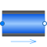
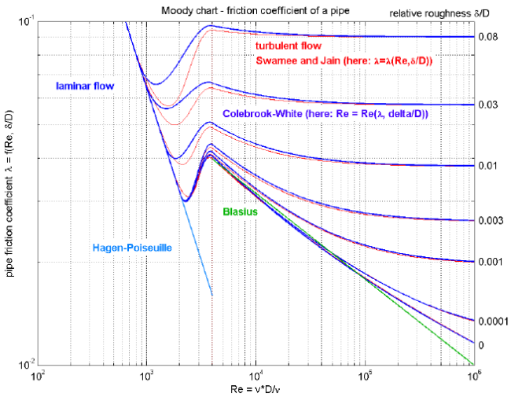

TestWallFrictionAndGravityPressure loss in pipe due to wall friction and gravity (only for test purposes; if needed use Pipes.StaticPipe instead) |

|
Information
This information is part of the Modelica Standard Library maintained by the Modelica Association.
This model describes pressure losses due to wall friction in a pipe and due to gravity. It is assumed that no mass or energy is stored in the pipe. Correlations of different complexity and validity can be selected via the replaceable package WallFriction (see parameter menu below). The details of the pipe wall friction model are described in the UsersGuide. Basically, different variants of the equation
dp = λ(Re,D)*(L/D)*ρ*v*|v|/2
are used, where the friction loss factor λ is shown in the next figure:

By default, the correlations are computed with media data at the actual time instant. In order to reduce non-linear equation systems, parameter use_nominal provides the option to compute the correlations with constant media values at the desired operating point. This might speed-up the simulation and/or might give a more robust simulation.
Parameters (17)
| allowFlowReversal |
Value: system.allowFlowReversal Type: Boolean Description: = true to allow flow reversal, false restricts to design direction (port_a -> port_b) |
|---|---|
| dp_start |
Value: dp_fric_nominal + system.g * height_ab * rho_nominal Type: AbsolutePressure (Pa) Description: Guess value of dp = port_a.p - port_b.p |
| m_flow_start |
Value: system.m_flow_start Type: MassFlowRate (kg/s) Description: Guess value of m_flow = port_a.m_flow |
| m_flow_small |
Value: if system.use_eps_Re then system.eps_m_flow * m_flow_nominal else system.m_flow_small Type: MassFlowRate (kg/s) Description: Small mass flow rate for regularization of zero flow |
| show_T |
Value: true Type: Boolean Description: = true, if temperatures at port_a and port_b are computed |
| show_V_flow |
Value: true Type: Boolean Description: = true, if volume flow rate at inflowing port is computed |
| length |
Value: Type: Length (m) Description: Length of pipe |
| diameter |
Value: Type: Diameter (m) Description: Inner (hydraulic) diameter of pipe |
| crossArea |
Value: Modelica.Constants.pi * diameter * diameter / 4 Type: Area (m²) Description: Inner cross section area |
| height_ab |
Value: 0.0 Type: Length (m) Description: Height(port_b) - Height(port_a) |
| roughness |
Value: 2.5e-5 Type: Roughness (m) Description: Absolute roughness of pipe (default = smooth steel pipe) |
| m_flow_nominal |
Value: if system.use_eps_Re then system.m_flow_nominal else 1e2 * system.m_flow_small Type: MassFlowRate (kg/s) Description: Nominal mass flow rate |
| use_nominal |
Value: false Type: Boolean Description: = true, if mu_nominal and rho_nominal are used, otherwise computed from medium |
| mu_nominal |
Value: Medium.dynamicViscosity(Medium.setState_pTX(Medium.p_default, Medium.T_default, Medium.X_default)) Type: DynamicViscosity (Pa·s) Description: Nominal dynamic viscosity (e.g., mu_liquidWater = 1e-3, mu_air = 1.8e-5) |
| rho_nominal |
Value: Medium.density_pTX(Medium.p_default, Medium.T_default, Medium.X_default) Type: Density (kg/m³) Description: Nominal density (e.g., rho_liquidWater = 995, rho_air = 1.2) |
| show_Re |
Value: false Type: Boolean Description: = true, if Reynolds number is included for plotting |
| from_dp |
Value: true Type: Boolean Description: = true, use m_flow = f(dp), otherwise dp = f(m_flow) |
Connectors (2)
| port_a |
Type: FluidPort_a Description: Fluid connector a (positive design flow direction is from port_a to port_b) |
|
|---|---|---|
| port_b |
Type: FluidPort_b Description: Fluid connector b (positive design flow direction is from port_a to port_b) |
Components (3)
| system |
Type: System Description: System wide properties |
|
|---|---|---|
| state_a |
Type: ThermodynamicState Description: state for medium inflowing through port_a |
|
| state_b |
Type: ThermodynamicState Description: state for medium inflowing through port_b |